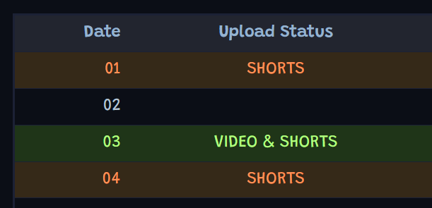
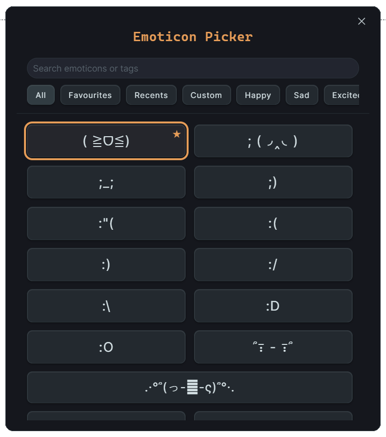

Aidah's Portfolio
Hello, I'm Aidah! I like solving problems, helping people, and making things both beautiful and easy to use. Currently doing my Bachelors in CSE, aiming for cybersecurity.
Creative Showcase
A glimpse into my journey as an animator and tutorial creator.


Obsidian Plugins
I try to build tools that both solve a problem and are easy to use, designed with accessibility in mind.
Always Color Text
Automatically color any word, phrase, or date across your vault. Supports regex patterns and custom styles.
SideCards
Visual sidebar cards for quick note-taking. Perfect for capturing ideas without leaving your current work.

Color Table Cell
Simple, mobile-friendly table cell coloring. Rules-based automation for keywords or numbers.

Dayble Calendar
Non-intrusive, customizable calendar. Stores events in clean JSON files directly inside your vault.

Emoticon Picker
Instant emoticon insertion. Features favorites, search, and custom emoticon management.

Blobob Theme
Animated theme with 60+ colors. Designed to make your workspace feel alive and playful.
Skills & Achievements
Software Reach
Over 6,000 downloads across various Obsidian plugins.
Animation Expertise
Over 7 years of experience in 2D and character animation.
Digital Resilience
Successfully recovered my channel from 6 different hacking attempts.
Started Young
Sharing animation tutorials on YouTube since I was 11, now at 290,000 subscribers.
Always Color Text
Why I made it
I was inspired by the colored "warn deprecated" text I saw in terminals. I thought it'd be so cool to have that in Obsidian. I wanted to mark daily tasks like DO: that I could turn into DONE: and it'd change colours automatically. That's why I made Always Color Text.
What it does
- Color any word or phrase anywhere in your vault
- Works in Live Preview and Reading mode
- Pick your own colors and save them as swatches
- Optional regex patterns if you want more power!
Cool features
- Different Coloring Styles can be set for different folders,
- Right-click to Color Once or add to your always-colored list
- Allows Text and background coloring together as well
- Pick between 7 Background Highlight styles!
SideCards
Why I made it
I'd randomly get a coding idea in the middle of making animation tutorials and I'd store all the ideas in a single document. The document got too long and it was annoying. I wanted an easier way to keep my ideas organized in Obsidian, so I made this SideCards plugin.
What it does
- Quickly create cards in your sidebar
- Color and tag them to keep things visual
- Drag cards straight into your notes
- Edit cards right there without opening the note
Cool features
- Auto-saves as you type
- Archive cards to clean up without losing them
- Turn cards into full markdown notes with one click
- Custom filters and styles to make your sidebar yours
- Notes saved to Tomorrow Category end up in Today Category on local time change!
Color Table Cell
Why I made it
I made this plugin after wanting to color tables really badly and couldn't find a plugin to easily do so. I wanted something simple that works even on mobile.
What it does
- Color table cells (background or text)
- Set rules to color cells automatically based on keywords or numbers
- Colors stay even after reopening the note
Cool features
- Works in Reading mode by default
- Can enable in Live Preview if you want
- Mobile-friendly
- Keeps tables looking clean and readable
Dayble Calendar
Why I made it
I wanted a non-intrusive calendar for Obsidian that doesn't clutter daily notes. Dayble stores events in JSON files, keeping your vault clean while providing a powerful scheduling tool.
What it does
- Store events as monthly JSON files
- Customizable categories with colors and animations
- Multiple view modes: Month, Week, 3-Day, Day, and Agenda
- Mobile-friendly interface
Cool features
- Triggers to automatically style events based on text
- Drag-and-drop support on desktop
- Markdown and HTML support within events
- Holder for undated events
Emoticon Picker

Why I made it
I love using emoticons to add personality to my notes, but searching for them manually was slow. I created this picker to make it instant and customizable!
What it does
- Pick from 200+ built-in emoticons
- Insert via Command Palette, Hotkeys, or Ribbon Icon
- Add and manage your own custom emoticons
Cool features
- Favorite list for frequently used emoticons
- Hide unused emoticons to reduce clutter
- Fast search and selection
Blobob Theme
Why I made it
As a self-taught animator with 7 years of experience, I love seeing motion in interactions. So I created this theme with 60+ colour options and, of course, ANIMATIONS! ( ≧ᗜ≦ )
What it does
- 60+ color options (Dark and Light modes)
- Animated Tabs & other UI elements
- Extensive customization via Style Settings
Cool features
- Lots of custom checkboxes
- Custom property styles and metadata colors
- Focus mode to hide distractions